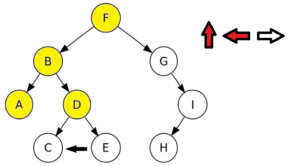
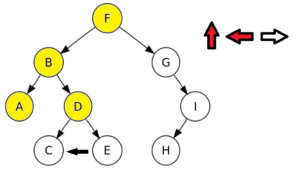
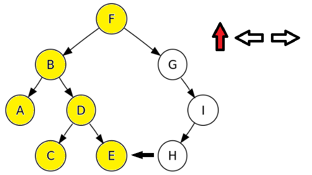
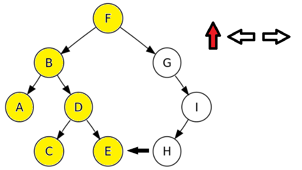
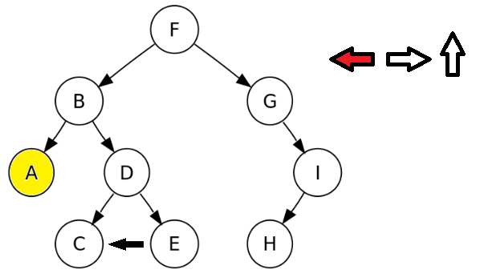
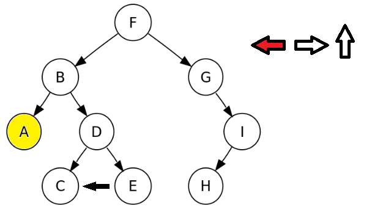
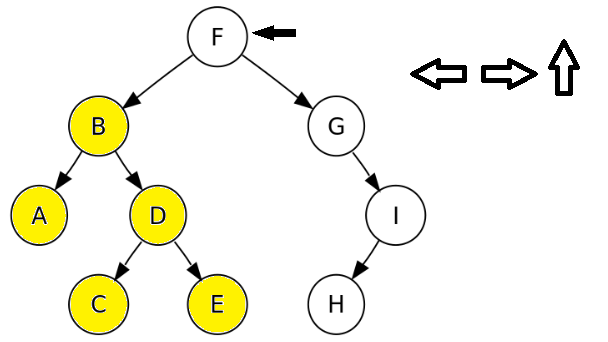
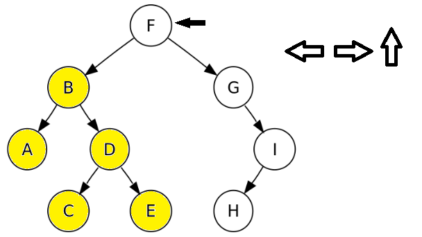

Push :añade al final .Pop :elimina del principio .FIFO (First In First Out).

-- Pila (FIFO) |-- Cola (LIFO) |-- Lista | -- Anchura |-- Arbol | -- Inorden ← ↑ → | -- Profundidad |-- Preorden ↑ ← → | -- Postorden ← → ↑ | -- Dirigido |-- Grafo | | -- No dirigido |-- Diccionario -- Tabla de Dipsersion (Tabla Hash)
En una lista


-- Inorden ← ↑ →
-- Profundidad |-- Preorden ↑ ← →
| -- Postorden ← → ↑
-- Anchura
Podemos recorrer un árbol en
Para estudiar el recorrido de arboles analizaremos le siguiente árbol binario ordenado.

Recorrido en


 


 



 


 

Recorrido en

Es una
También es una